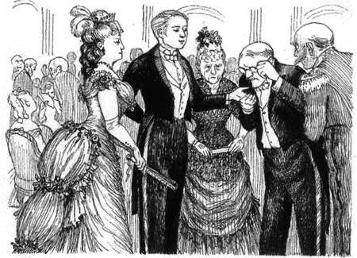

LORD ARTHUR SAVILE’S CRIME
Listen to Part 1:
‘Tôi muốn bạn gặp bác xem chỉ tay của tôi,’ Quý bà Windermere nói.
‘Bác xem chỉ tay là gì?’ Tử tước Arthur Savile hỏi.
‘Người xem chỉ tay là người đọc bàn tay của mọi người,’ Quý bà Windermere nói. ‘Người xem chỉ tay có thể nói trước tương lai của bạn bằng cách nhìn bàn tay bạn. Một người đàn ông trẻ hiểu được tương lai của mình là điều quan trọng.’
‘Ồ, ý bà là bác ấy là một thầy bói thông thường,’ Tử tước Arthur Savile nói.
‘Không, không,’ Quý bà Windermere nhanh chóng nói, ‘ông ấy không phải là một thầy bói. Người xem chỉ tay thông minh hơn nhiều so với một thầy bói. Và người xem chỉ tay cũng thời thượng hơn so với thầy bói. Mọi người ở Luân Đôn đều muốn gặp người xem chỉ tay. Bác xem chỉ tay của tôi hàng tuần.’
‘Ông ấy có tên nước ngoài không?’ Tử tước Arthur hỏi.
‘Không, ông ấy là người Anh,’ Quý bà Windermere trả lời. ‘Tên ông ấy là Podgers.’
‘Được lắm, làm ơn giới thiệu tôi với ông Podgers,’ Tử tước Arthur nói. ‘Nhưng tôi không muốn biết tương lai của tôi. Tôi hài lòng với cuộc sống của mình vào thời điểm này.’
Họ đi qua đám đông. Căn phòng chật cứng những quý ông quý bà ăn mặc thời trang và đắt tiền. Họ đều là khách của Quý bà Windermere. Đây là Tiệc chiêu đãi mùa xuân của Quý bà Windermere. Tiệc chiêu đãi của Quý bà Windermere là những buổi tiệc nổi tiếng và thời thượng nhất ở Luân Đôn. Bà tổ chức tiệc chiêu đãi hàng năm và mời mọi người nổi tiếng và thời thượng nhất ở thủ đô đến dự.
Có một số tử tước tại buổi tiệc chiêu đãi. Sáu bộ trưởng chính phủ đang nói chuyện với một Công nương Đức. Các bộ trưởng mỉm cười với Quý bà Windermere khi bà đi qua.
Listen to Part 2:
Có các nhà ngoại giao đến từ nhiều quốc gia. Có nhiều nghệ sĩ, nhạc sĩ và bác sĩ nổi tiếng. Có một nhà khoa học thời thượng nói về chính trị và kinh tế. Có một người theo chủ nghĩa vô chính phủ người Nga nói về bom. Và có cả ông Podgers - người xem chỉ tay.
‘Ông ấy kia,’ Quý bà Windermere nói. ‘Đó là ông Podgers. Ông ấy đang nói chuyện với Nữ công tước xứ Paisley.’
Tử tước Arthur Savile nhìn ông Podgers. Ông Podgers đang nhìn bàn tay của Nữ công tước xứ Paisley. Ông Podgers là một người đàn ông thấp bé, mập mạp với nụ cười khó chịu. Đôi mắt ông nhỏ và sáng và ông đeo kính vàng. Ông ấy nắm chặt tay phải của Nữ công tước và nhìn chăm chú vào nó.
‘Bàn tay của ngài rất đẹp, thưa nữ công tước,’ ông ta nói. Ông ấy cười khó chịu và cúi chào bà.
Tử tước Arthur Savile nhìn bàn tay của Nữ công tước. Nó nhỏ và xấu xí.
Nữ công tước vẫy tay trái và mỉm cười với ông Podgers.
‘Nữ công tước ngài rất giỏi kinh doanh,’ ông Podgers nói.
‘Khi tôi kết hôn với Tử tước Paisley, tôi chỉ là một thiếu nữ,’ Nữ công tước nói. ‘Tử tước Paisley có mười một lâu đài và không có nhà nào. Tôi đã bắt chồng mình bán những lâu đài đó. Bây giờ tôi có mười hai ngôi nhà và không có lâu đài nào.’
Mọi người đều cười với điều này. Ông Podgers cười lớn nhất. Sau đó, mọi người muốn ông Podgers xem tay của họ. Nhưng Tử tước Arthur Savile đợi và quan sát.
Tiếp theo là Ngài Thomas, nhà thám hiểm nổi tiếng. Ông ấy giơ tay ra và ông Podger mỉm cười.
Listen to Part 3:
‘Ông đã có nhiều chuyến phiêu lưu,’ ông Podgers nói. ‘Ông đã thực hiện bốn chuyến đi biển dài ngày. Tàu của ông đã bị đánh chìm hai lần. Ông đang lên kế hoạch cho một chuyến đi biển nữa - đến Nam Cực. Ông bị ốm khi mười bảy tuổi. Ông trở nên giàu có khi ông ba mươi tuổi. Ông không thích mèo.’
‘Thật kinh ngạc!’ Ngài Thomas nói. ‘Mỗi lời đều đúng. Thật là tuyệt vời.’
‘Ông ấy đọc báo cũng như xem chỉ tay,’ Quý bà Windermere nói với Tử tước Arthur. ‘Sẽ không khó để nói trước vận may của những người nổi tiếng nếu bạn đọc báo.’
‘Vậy ra là bà không tin vào bói toán,’ Tử tước Arthur nói. ‘Tại sao bà lại mời ông ấy đến dự tiệc chiêu đãi của mình?’
‘Tôi thấy ông ấy vui tính,’ Quý bà Windermere trả lời. ‘Ông ấy là người thời thượng và làm những vị khách giải trí.’
Sáu, bảy, tám người giơ tay ra với ông Podgers. Ông ấy xem tay họ và nói trước tương lai của họ. Mọi người đều ngạc nhiên và kinh ngạc.
Tất cả họ đều cười và nói to.
‘Xuất sắc!’
‘Đúng!’
‘Thật kinh ngạc!’
Listen to Part 4:
‘Ông Podgers thật tuyệt vời.’
Ông Podgers xem tay của tất cả mọi người xung quanh mình. Ông ấy cười và hứa hẹn tương lai tốt đẹp. Chỉ có đại sứ Nga là không giơ tay. Tử tước Arthur Savile đợi và quan sát.
‘Nào, Tử tước Arthur, đến lượt ngài,’ Quý bà Windermere nói. ‘Tôi muốn biết tương lai của ngài.’
‘Tại sao?’ Tử tước Arthur hỏi.
‘Bởi vì hôn thê của ngài là Sybil sẽ đến gặp tôi vào ngày mai. Ngài sẽ kết hôn vào tháng tới. Tôi muốn biết rằng ngài sẽ hạnh phúc. Tôi sẽ nói với Sybil tin tốt lành.’
Quý bà Windermere nói chuyện với ông Podgers.
‘Ông Podgers, đây là Tử tước Arthur Savile. Ngài ấy là một trong những người đàn ông trẻ yêu thích của tôi. Ngài ấy sẽ kết hôn vào tháng tới. Làm ơn hãy nói trước tương lai của ngài ấy. Làm ơn hãy nói với ngài ấy điều gì đó tốt lành.’
Ông Podgers mỉm cười với Quý bà Windermere. ‘Tôi sẽ rất vui lòng làm vậy, thưa nữ công tước.’
Ông Podgers nắm tay phải của Tử tước Arthur. Khuôn mặt của người xem chỉ tay trở nên tái nhợt. Ông không nói gì. Ông nhìn kỹ bàn tay của Tử tước Arthur trong hơn một phút.
Tử tước Arthur đột nhiên cảm thấy sợ hãi. ‘Tôi đang đợi, ông Podgers,’ ngài nói.
Listen to Part 5:
‘Tất cả chúng ta đều đang chờ,’ Quý bà Windermere nói.
Ông Podgers nắm lấy tay trái của Tử tước Arthur. Ông ấy nhìn rất kỹ nó. Kính vàng của ông ấy gần như chạm vào tay của Tử tước Arthur. Khuôn mặt ông ấy cho thấy ông ấy thấy điều gì đó khủng khiếp. Nhưng ông nhanh chóng ngước lên và mỉm cười khó chịu.

‘Đây là bàn tay của một chàng trai trẻ rất dễ chịu và quyến rũ,’ ông Podgers nói.
‘Tất nhiên là vậy,’ Quý bà Windermere giận dữ nói. ‘Nhưng liệu ngài ấy có trở thành một người chồng trẻ quyến rũ không? Đó là điều tôi muốn biết.’
‘Tất cả những người đàn ông trẻ quyến rũ đều là những người chồng quyến rũ,’ ông Podgers nói.
‘Tôi biết điều đó,’ Quý bà Windermere nói lớn. ‘Nói trước tương lai của ngài ấy cho tôi biết. Chuyện gì sẽ xảy ra trong cuộc đời Tử tước Arthur?’
‘Chỉ có ít điều để nói,’ ông Podgers nói. ‘Ngài ấy sẽ thực hiện một chuyến đi . . . ’
‘Tất nhiên là ngài ấy sẽ thực hiện một chuyến đi,’ Quý bà Windermere nói. ‘Ngài ấy sẽ kết hôn vào tháng tới. Ngài ấy và vợ sẽ đi hưởng tuần trăng mật. Ông nói vậy là sao? Ông có muốn nói tuần trăng mật của ngài ấy không?’
‘Tôi không biết,’ ông Podgers nói. ‘Ngoài ra, một trong những người họ hàng của ngài ấy sẽ sớm qua đời.’
Listen to Part 6:
‘Ai vậy?’ Quý bà Windermere hỏi. ‘Không phải là chị gái của ngài ấy chứ?’
‘Không, không, không phải một thành viên trong gia đình gần gũi của mình. Một người họ hàng xa,’ ông Podgers nói. ‘Có lẽ là một người anh em họ xa.’ Sau đó, ông ấy im lặng. Ông ấy không nói gì thêm.
Quý bà Windermere rất tức giận. Đây là một kết thúc tồi tệ cho một buổi tối tuyệt vời.
‘Đi nào. Đến giờ ăn tối rồi,’ Quý bà Windermere gọi cho các vị khách của mình. ‘Đồ ăn đã sẵn sàng.’
Bà đi ra khỏi phòng. Mọi người đi theo bà đến bàn ăn tối chỉ trừ Tử tước Arthur và ông Podgers.
Tử tước Arthur nhìn ông Podgers giận dữ. Ông Podgers sợ hãi.
‘Nói cho tôi biết ông đã nhìn thấy gì trong tay tôi,’ Tử tước Arthur nói. ‘Tôi không phải trẻ con. Tôi phải biết sự thật. Nói cho tôi biết bây giờ đi. Tôi sẽ trả cho ông một trăm bảng Anh.’
Đôi mắt của ông Podgers sáng lên. Một trăm bảng Anh là một số tiền lớn.
‘Được lắm,’ ông Podgers nói. ‘Đây là danh thiếp của tôi.
Listen to Part 7:
Làm ơn gửi một trăm bảng Anh đến văn phòng của tôi vào ngày mai. Bây giờ tôi sẽ nói cho ngài biết những gì tôi nhìn thấy, nhưng ngài sẽ không thích đâu.’
Tử tước Arthur Savile cầm tấm danh thiếp. Ngài ấy lắng nghe khi ông Podgers nói trước vận may của ngài ấy.

Mười phút sau, Tử tước Arthur Savile rời khỏi nhà Quý bà Windermere. Ngài không tạm biệt bà ấy. Ngài ấy lo lắng, buồn bã - và sợ hãi.
Ngài ấy đi khỏi ngôi nhà lớn. Ngài ấy đi khỏi con phố thời thượng. Tất cả những ngôi nhà trên phố đều thuộc về những người đàn ông giàu có.
Ngài ấy đi ngang qua Phố Oxford và qua những con phố không thời thượng ở Soho. Đây là một khu phố nghèo của Luân Đôn. Một người ăn xin xin tiền khi Tử tước Arthur đi ngang qua. Hai người phụ nữ trang điểm dày cộm cười ngài ấy. Ngài ấy thấy một cuộc ẩu đả trên một con phố tối tăm. Ngài ấy nghe thấy tiếng la hét từ một tòa nhà bẩn thỉu, tối tăm. Sau đó, một cảnh sát dừng ngài ấy lại.
‘Không an toàn cho một quý ông đi bộ trên những con phố này vào ban đêm,’ người cảnh sát nói.
Tử tước Arthur cảm ơn anh ta và đi tiếp. Tử tước Arthur thấy một người ăn xin khác. Ngài ấy bỏ một đồng tiền vào tay ông già. Người đàn ông này nghèo. Tử tước Arthur giàu có. Có phải là số phận của người đàn ông này là nghèo khó không? Có phải là số phận của Tử tước Arthur là giàu có không? Tương lai của một người đàn ông có được viết trên tay anh ta không? Ông Podgers có thể đọc được tương lai đó không?
Ông Podgers đã đọc tương lai trong tay của Tử tước Arthur. Tử tước Arthur có thể thoát khỏi số phận của mình không? Không. Tử tước Arthur không tin rằng anh ta có thể thay đổi tương lai. Nhưng có lẽ anh ta có thể thực hiện nó theo một cách khác?
Bây giờ Tử tước Arthur đã đi đến Marylebone. Ngài ấy không biết khu vực này của Luân Đôn. Anh ta quay trở lại Phố Oxford. Các con phố được thắp sáng bằng đèn khí và sương mù bốc lên từ con sông.
Listen to Part 8:
Ở góc Phố Rich, anh ta nhìn thấy hai người đàn ông. Họ đang đọc một thông báo của cảnh sát trên tường. Tử tước Arthur tiến đến thông báo đó và đọc nó. Ngài ấy nhìn thấy từ GIẾT NGƯỜI bằng chữ đen lớn. Đã có một vụ giết người ở Soho. Thông báo nói rằng cảnh sát sẽ trả tiền nếu có thông tin. Có một bức vẽ kẻ sát nhân trên thông báo.
Có lẽ một ngày nào đó một thông báo của cảnh sát sẽ in hình vẽ của tôi, Tử tước Arthur nghĩ. Vận mệnh của tôi là phải trở thành một kẻ giết người. Ông Podgers nói rằng tôi sẽ giết một số người sớm thôi.
Tử tước Arthur đi bộ về nhà của mình ở Quảng trường Belgrave. Ngài ấy đi ngủ ngay và không thức dậy cho đến mười hai giờ ngày hôm sau.
Anh nghĩ về hôn thê của mình, Sybil. Ảnh của cô ấy nằm bên cạnh giường anh ấy. Họ sẽ kết hôn trong một tháng nữa và anh ấy yêu cô ấy.
Ngài ấy cũng nghĩ về những gì ông Podgers đã nói với ngài ấy. 'Bạn sẽ giết một ai đó', ông Podgers đã nói.
‘Nhưng tôi sẽ giết ai?’ Tử tước Arthur đã hỏi. Ông Podgers không nói gì.
Tại sao anh ta lại tin người xem chỉ tay? Thật kỳ lạ. Ngài ấy đã cảm thấy sợ hãi khi ông Podgers nói chuyện. Tử tước Arthur tin rằng lời của người xem chỉ tay là sự thật. ‘Tôi sẽ giết một ai đó,’ ngài ấy nói. Đơn giản vậy thôi. Nhưng ai? Ở đâu? Khi nào? Những câu hỏi cứ lởn vởn trong đầu anh ấy.
Tử tước Arthur Savile đã quyết định hai điều. Điều đầu tiên là ngài ấy không thể kết hôn với Sybil - chưa thể. Điều thứ hai là như thế này - ‘Tôi sẽ tự tạo ra tương lai cho mình. Tôi sẽ giết một ai đó’, ngài ấy nói. Có lẽ những quyết định này thật kỳ lạ, nhưng Tử tước Arthur đã quyết định sẽ làm gì.
Listen to Part 9:
Ông Podgers đã nói thêm một điều khác. ‘Một trong những người họ hàng của bạn sẽ sớm qua đời . . . một người họ hàng xa, có lẽ là một người em họ xa.’ Tử tước Arthur không có nhiều người họ hàng xa. Chỉ có người em họ thứ hai của ngài ấy, Quý bà Clementina Beauchamp. Bà ấy là một bà lão sống ở Phố Curzon. Tử tước Arthur quyết định sẽ giết bà ấy. ‘Bà ấy đã già và sẽ không sống được bao lâu nữa,’ ngài ấy tự nhủ. ‘Tôi sẽ giết bà ấy. Sau đó tôi sẽ cưới Sybil.’
Ngài ấy đến một thư viện lớn và xem những cuốn sách về y học. Một cuốn sách tên là Độc học đã giúp ích cho anh ấy. Đó là một cuốn sách về chất độc. Có một chất độc mạnh gọi là aconitine có tác dụng nhanh chóng và không đau đớn. Tử tước Arthur ghi lại tên loại thuốc độc rồi đến một hiệu thuốc.
Tử tước Arthur yêu cầu được gặp dược sĩ. ‘Tôi có một con chó lớn,’ Tử tước Arthur nói với dược sĩ. ‘Nó đã cắn nhiều người. Tôi phải giết con chó đó nhưng tôi không muốn bắn nó. Ông có thể giúp tôi không? Tôi cần một loại thuốc độc nhanh chóng và không đau đớn. Bác sĩ của tôi bảo tôi rằng có một loại thuốc độc gọi là aconitine.’
‘Vâng, có một loại thuốc độc gọi là aconitine,’ dược sĩ nói, ‘nhưng tôi không thể đưa nó cho ngài. Ngài phải mang một tờ giấy có chữ ký của bác sĩ đến đây. Tôi cần một giấy chứng nhận của bác sĩ trước khi tôi có thể đưa thuốc độc cho ngài.’
‘Bác sĩ của tôi là Ngài Matthew Reid và tôi là Tử tước Arthur Savile. Tôi có phải lấy giấy chứng nhận không? Tôi sẽ rời khỏi đất nước rất sớm và tôi đang rất vội.’
Dược sĩ đã nghe tên Ngài Matthew Reid. Ngài Matthew Reid là một bác sĩ nổi tiếng. ‘Được thôi, thưa ngài, nếu ngài hứa là mình sẽ chỉ sử dụng thuốc độc này để giết con chó đó. . . ’
‘Vâng, tất nhiên rồi,’ Tử tước Arthur nói, ‘Tôi hứa.’
‘Được lắm,’ dược sĩ nói. ‘Tôi sẽ làm một viên thuốc độc cho con chó của ngài.’
Dược sĩ làm viên thuốc độc. Nó trông giống như một viên kẹo nhỏ tròn. Nửa giờ sau, Tử tước Arthur mua một hộp kẹo nhỏ trong một cửa hàng ở Piccadilly. Anh ấy vứt những viên kẹo đi và bỏ viên thuốc độc vào hộp. Sau đó, anh ấy đến thăm Quý bà Clementina Beauchamp.
‘Arthur! Tôi rất mừng khi gặp bạn,’ Quý bà Clementina nói. ‘Sybil thế nào? Mọi thứ đã sẵn sàng cho đám cưới của bạn chưa?’
Listen to Part 10:
‘Sybil rất khỏe, cảm ơn bà,’ Tử tước Arthur nói. ‘Cô ấy đã đến gặp Quý bà Windermere hôm nay. Tôi sẽ gặp Sybil sau.’
‘Bạn rất tốt khi đến thăm tôi,’ Quý bà Clementina nói. ‘Tôi già và đau ốm. Tôi chắc những người trẻ tuổi như bạn nghĩ tôi thật nhàm chán. Du khách duy nhất của tôi là bác sĩ.’
‘Tôi biết bà không khỏe,’ Tử tước Arthur nói. ‘Tôi mang một ít thuốc đến cho bà.’
Anh ấy đưa hộp kẹo cho Quý bà Clementina, người nhìn vào bên trong. Bà ấy lấy viên thuốc ra và nhìn nó.
‘Nó trông giống như một viên kẹo,’ Quý bà Clementina nói. Bạn có chắc đó là thuốc không? Tôi nên uống ngay bây giờ không?’
‘Đó là thuốc . . . vâng . . . nhưng đừng uống ngay bây giờ,’ Tử tước Arthur nói. ‘Đây là một loại thuốc mới đến từ Châu Mỹ. Nó là một loại thuốc rất tốt. Uống thuốc trước khi đi ngủ. Nó sẽ giúp bà ngủ ngon hơn.’
‘Bạn rất tốt,’ Quý bà Clementina nói. ‘Tôi sẽ cố gắng nhớ uống nó. Tôi già rồi và quên nhiều thứ. Nhưng tôi sẽ không quên đến dự đám cưới của bạn đâu.’
Tử tước Arthur tạm biệt Quý bà Clementina. Sau đó, ngài ấy đi gặp Sybil tại nhà bố cô ấy ở Công viên Lane. Ngài ấy muốn thay đổi ngày kết hôn của họ. Ngài ấy muốn trì hoãn đám cưới của họ nhưng ngài ấy không muốn làm Sybil đau lòng.
Tử tước Arthur yêu cầu Sybil đợi. ‘Chúng ta sẽ kết hôn . . . nhưng chưa phải bây giờ. Làm ơn chờ thêm một thời gian nữa. Mọi chuyện sẽ ổn thôi. Hãy tin tôi.’
Sybil rất buồn. Cô ấy không hiểu. Tại sao Arthur lại muốn trì hoãn đám cưới của họ? Tử tước Arthur ngồi nói chuyện với cô ấy cho đến tận tối muộn. Sau đó, ngài ấy đi tàu đêm đến Venice ở Ý.
Listen to Part 11:
Tại Venice, Tử tước Arthur gặp anh trai mình, Tử tước Surbiton. Họ ở bên nhau trong hai tuần nhưng Tử tước Arthur không thích chuyến thăm Venice của mình. Ngài ấy lo lắng và bồn chồn. Ngài ấy đọc báo từ Anh hàng ngày. Ngài ấy tìm kiếm tin tức về Quý bà Clementina Beauchamp.
Một sáng, một bức thư từ London gửi đến. Quý bà Clementina đã chết. Bà ấy nói rằng bà ấy muốn Tử tước Arthur có ngôi nhà của mình. Vì vậy, Tử tước Arthur Savile bây giờ sở hữu ngôi nhà của Quý bà Clementina.
Tử tước Arthur ngay lập tức trở về Luân Đôn. Đầu tiên, ngài ấy đến gặp Sybil và lên kế hoạch cho đám cưới của họ. Sau đó, ngài ấy và Sybil đến nhà của Quý bà Clementina.
Tử tước Arthur và Sybil nhìn xung quanh ngôi nhà của Quý bà Clementina. Họ mở ngăn kéo và tủ quần áo. Trong một ngăn kéo, Sybil tìm thấy một chiếc hộp kẹo nhỏ.
‘Nhìn chiếc hộp nhỏ xinh đẹp này,’ Sybil nói với Arthur. ‘Bên trong có một viên kẹo cũ.’
Tử tước Arthur nhìn. Mặt ngài ấy tái nhợt. Đó là chiếc hộp mà ngài ấy đã đưa cho Quý bà Clementina. Viên thuốc độc vẫn ở bên trong.
‘Tôi sẽ vứt nó đi,’ Tử tước Arthur nói. Anh ấy cầm lấy viên thuốc và ném nó vào lửa.
‘Nhưng đừng đốt chiếc hộp,’ Sybil nói. ‘Làm ơn đừng vứt chiếc hộp đi. Arthur, anh trông rất xanh xao. Có chuyện gì vậy không?’
Listen to Part 12:
‘Nhìn chiếc hộp nhỏ xinh đẹp này,’ Sybil nói với Arthur. ‘Bên trong có một viên kẹo cũ.’
Tử tước Arthur biết rằng mình không giết được Quý bà Clementina. Trước khi kết hôn, mình đã quyết định giết một ai đó. Bây giờ ngài ấy phải trì hoãn đám cưới của mình thêm một lần nữa.
Tử tước Arthur Savile đã trì hoãn đám cưới của mình lần thứ hai. Sybil rất buồn. Cha cô ấy tức giận. Tử tước Arthur Savile rất buồn.
Tử tước Arthur phải tìm ai đó để giết. Ngài ấy không còn người họ hàng xa nào nữa. Vì vậy, ngài ấy quyết định sẽ giết một thành viên thân thiết trong gia đình mình, chú của ngài ấy, Trưởng khoa Chichester. Chú ngài ấy là một người quan trọng trong Giáo hội.
Trưởng khoa quan tâm đến đồng hồ. Ông ấy có một bộ sưu tập đồng hồ lớn. Vì vậy, Tử tước Arthur quyết định sẽ gửi cho ông một quả bom bên trong một chiếc đồng hồ. Nhưng ngài ấy có thể tìm thấy quả bom ở đâu?
Ngài ấy nhớ đến tiệc chiêu đãi của Quý bà Windermere. Ngài ấy đã gặp một chàng trai trẻ người Nga tên là Bá tước Rouvaloff. Bá tước đã nói về chủ nghĩa vô chính phủ và bom. Trên báo thường có tin tức về những người theo chủ nghĩa vô chính phủ. Những người theo chủ nghĩa vô chính phủ giết những người quan trọng bằng bom. Tử tước Arthur biết rằng Bá tước sống gần Bảo tàng Anh. Ngài ấy đã đến thăm anh ta.
‘Anh muốn có bom?’ Bá tước nói. ‘Tôi không biết anh quan tâm đến chính trị.’
‘Tôi có một số việc riêng. Tôi không quan tâm đến chính trị,’ Tử tước Arthur nói.
Bá tước Rouvaloff nhìn anh ta ngạc nhiên. Anh ta nghĩ rằng chỉ những người theo chủ nghĩa vô chính phủ mới sử dụng bom. Nhưng anh ta thấy Tử tước Arthur nghiêm túc. Anh ta tin rằng Tử tước Arthur thực sự muốn có một quả bom. Anh ta viết một địa chỉ trên một tờ giấy.
Listen to Part 13:
‘Đây là một địa chỉ bí mật,’ Bá tước Rouvaloff nói. Đừng nói với ai. Đọc địa chỉ này rồi đốt tờ giấy đi.’
‘Tôi sẽ đốt nó, đừng lo,’ Tử tước Arthur nói.
Anh ấy bắt tay người Nga rồi rời đi. Tờ giấy đưa ra một địa chỉ ở Soho. Soho là một khu phố nghèo ở Luân Đôn nơi có nhiều người nước ngoài sinh sống. Tử tước Arthur đến Phố Hy Lạp. Ngài ấy gõ cửa một tòa nhà cũ.
Người đàn ông mở cửa nói tiếng Đức. Tử tước Arthur đưa cho ông tờ giấy từ Bá tước Rouvaloff.
‘Vào đi,’ người đàn ông nói.
Tòa nhà là một cửa hàng trống. Tử tước Arthur đợi một vài phút. Sau đó, một người đàn ông khác vào phòng.
‘Tôi là Herr Winckelkopf,’ người đàn ông nói. ‘Tôi có thể giúp gì cho ngài?’
‘Tôi tên là Smith,’ Tử tước Arthur nói. ‘Bá tước Rouvaloff đã gửi tôi đến đây. Tôi cần một quả bom.’
‘Cần loại bom gì?’ Herr Winckelkopf hỏi.
‘Một quả bom trong một chiếc đồng hồ,’ Tử tước Arthur nói.
Listen to Part 14:
‘Ồ, tôi đã gửi một quả bom trong một chiếc đồng hồ cho thống đốc Odessa,’ Herr Winckelkopf nói. ‘Ngài muốn cho nổ tung ai?’
‘Tôi muốn cho nổ tung Trưởng khoa Chichester.’
‘Một giáo sĩ ư? Vậy là ngài quan tâm đến tôn giáo.’
‘Không, đó là chuyện riêng tư.’
‘Tôi có một chiếc đồng hồ đẹp,’ Herr Winckelkopf nói. Anh ấy cho Tử tước Arthur xem một chiếc đồng hồ. Có hai hình bằng gỗ trên chiếc đồng hồ - một người phụ nữ và một con rồng. ‘Người phụ nữ là Tự do,’ Herr Winckelkopf tiếp tục. ‘Con rồng là Độc tài. Tự do mạnh hơn Độc tài.’
‘Vâng, tôi hiểu rồi,’ Tử tước Arthur nói. ‘Nhưng tôi không quan tâm đến chính trị. Anh có thể làm quả bom ngay lập tức được không?’
‘Tôi có một công việc quan trọng phải làm cho bạn bè ở Moscow,’ Herr Winckelkopf nói. ‘Nhưng tôi có thể làm quả bom của ngài trong vài ngày. Ngài muốn nó phát nổ khi nào?’
Listen to Part 15:
‘Vào thứ Sáu, lúc giữa trưa.’
Tử tước Arthur viết một địa chỉ trên một tờ giấy. ‘Làm ơn gửi nó đến Trưởng khoa Chichester. Đây là địa chỉ.’
‘Thứ Sáu, lúc giữa trưa,’ Herr Winckelkopf lặp lại. ‘Trưởng khoa Chichester.’
‘Và tôi nợ anh bao nhiêu tiền?’ Tử tước Arthur hỏi.
‘Tôi không làm việc vì tiền,’ Herr Winckelkopf nói. ‘Tôi là một người theo chủ nghĩa vô chính phủ. Tôi đang làm việc cho Tự do. Hãy trả cho tôi năm bảng.’
Tử tước Arthur trả cho anh ta năm bảng và rời khỏi ngôi nhà ở Phố Hy Lạp. Ngài ấy chờ ở nhà cho đến cuối tuần. Ngài ấy chờ tin tức.
Cuối tuần đã đến. Không có gì xảy ra. Ngài ấy đã đợi cả một tuần nữa. Vẫn không có gì xảy ra. Sau đó, ngài ấy nhận được một lá thư từ Trưởng khoa Chichester.
Trụ sở Giáo phận,
Chichester
Listen to Part 16:
Arthur thân mến,
Tôi viết thư để hỏi anh về thời trang ở Luân Đôn. Tuần trước, tôi nhận được một chiếc đồng hồ, nhưng tôi không biết ai gửi nó. Đó là một món đồ chơi thông minh. Bên trong có một cái báo thức giống như một cái búa nhỏ. Khi báo thức điểm mười hai, khói sẽ bốc ra khỏi đồng hồ. Nó rất thông minh. Mọi người ở Luân Đôn đều có một chiếc đồng hồ như thế này sao?
Chú của anh
Tử tước Arthur không giết được chú mình. Quả bom đã không phát nổ. Ngài ấy rất lo lắng. ‘Tôi phải làm gì bây giờ?’ ngài tự hỏi. ‘Tôi có nên rời khỏi đất nước không? Tôi có nên nói với Sybil rằng tôi sẽ không kết hôn với cô ấy không?’
Tối hôm đó, ngài ấy đi ăn tối với anh trai mình, Tử tước Surbiton. Những người bạn của anh trai ngài ấy rất trẻ và ngốc nghếch. Họ gây ra rất nhiều tiếng ồn trong nhà hàng. Tử tước Arthur thấy chán cuộc trò chuyện của họ. Ngài ấy rời khỏi nhà hàng lúc mười một giờ và đi dọc bên bờ sông.
Sương mù bốc lên từ sông. Những ngọn đèn đường dọc theo con đường sáng như mặt trăng bạc. Có rất ít người trên đường. Tử tước Arthur đi từ Blackfriars về phía Westminster. Anh ấy nghe thấy tiếng chuông đồng hồ Big Ben ở Westminster điểm mười hai giờ. Tử tước Arthur đứng bên bức tường và nhìn xuống sông. Sương mù dày đặc và ngài ấy không thể nhìn thấy con sông dễ dàng. Ánh sáng của đèn đường khiến dòng sông trở nên đen và bạc. Nước chảy rất nhanh. Dòng sông khiến Tử tước Arthur nghĩ đến những điều đen tối và khủng khiếp.
Ngài ấy ghét ông Podgers, người xem chỉ tay. Ng